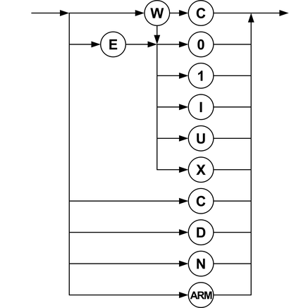

Receive actions
Every (unabbreviated) action specification consists of one or two characters. If it consists of two characters, the first character specifies whether the action is an edge or a window compare. The second character controls the value with which the result of an output pin is to be compared. The one character codes control digital capture.
The syntax diagram for the specification of receive actions is as follows:

The character codes have the following meaning:
Code |
Explanation |
|---|---|
C |
For ‘Close compare window' (after W), or for ‘Capture digital data'. |
D |
For ‘Do not capture digital data' |
E |
For ‘Edge compare'. |
I |
For ‘compare to Intermediate'. |
N |
For ‘No action', the current settings are not changed. |
U |
For ‘compare to Unstable'. |
W |
For ‘Window compare'. |
X |
Compare to mask. |
0 |
Compare to 0. |
1 |
Compare to 1. |
ARM |
This action arms the TMU per pin (only on Smart Scale systems), see Starting a TMU measurement. |
A window compare consists of two actions at two different edges. The first opens the window and
specifies the compare value, the second closes the window, for example "r1:W1
r2:WC".
Some fixed specifications can be abbreviated as specified in the following table:
Action |
Abbreviation |
|---|---|
E0 |
L |
E1 |
H |
EI |
M |
EU |
U |
EX |
X |
N |
. (period) |
Functional changes
- Introduced before SmarTest 6.3.2